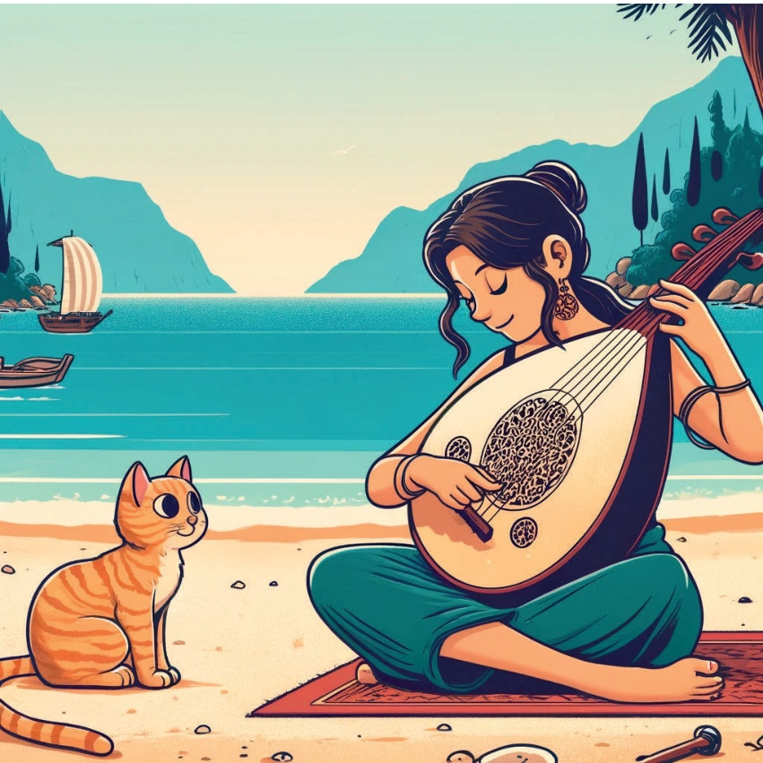
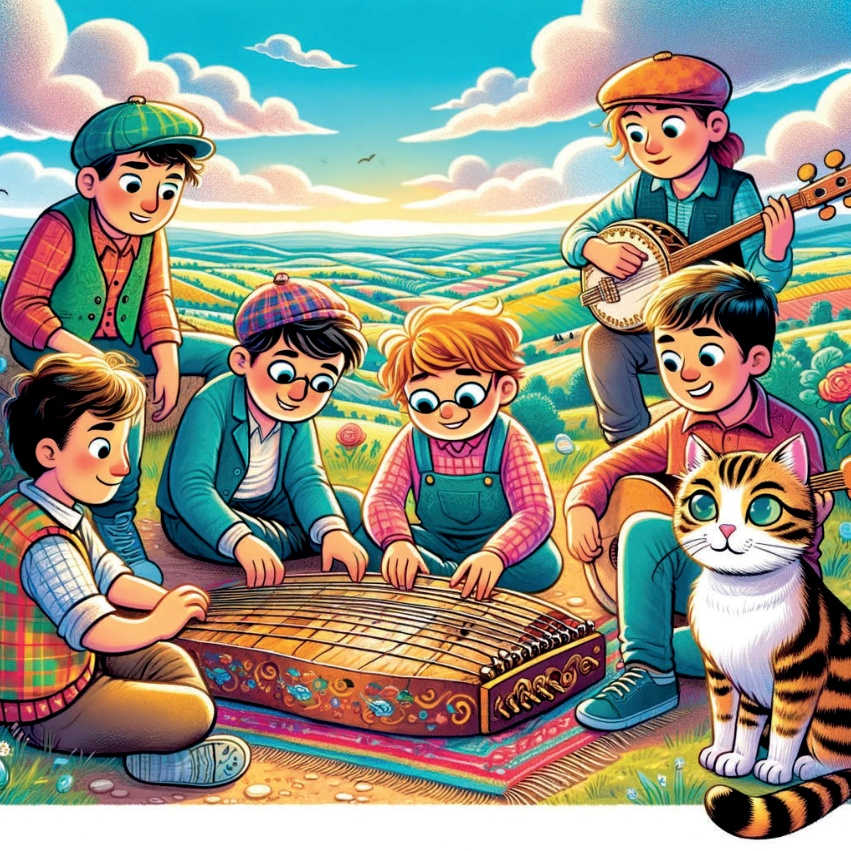
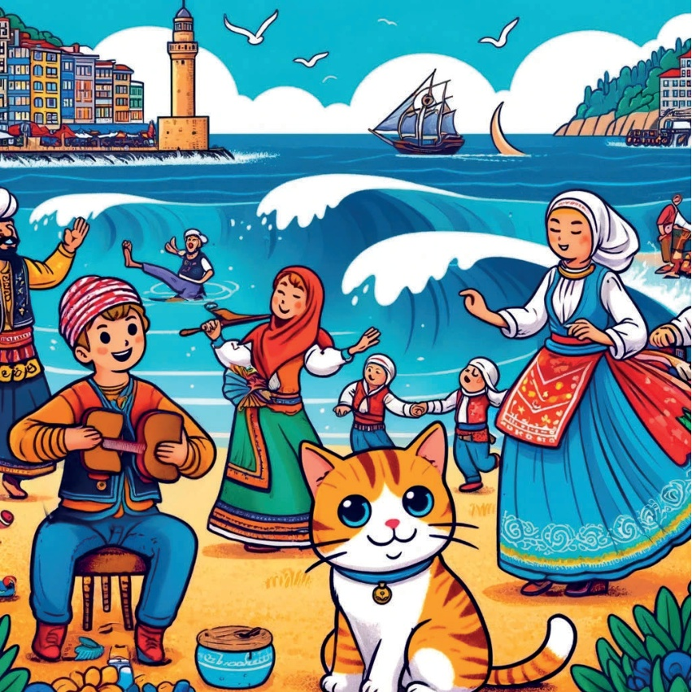
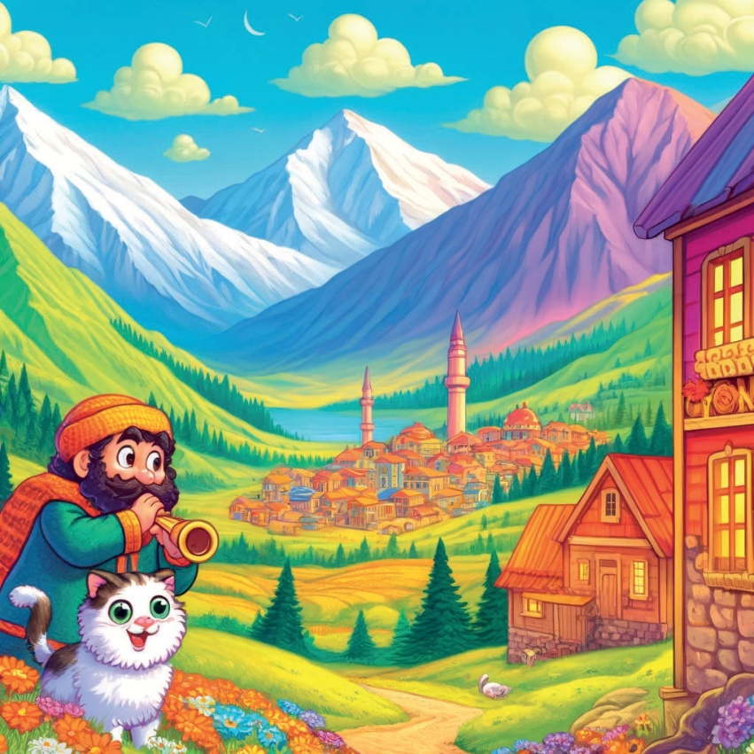
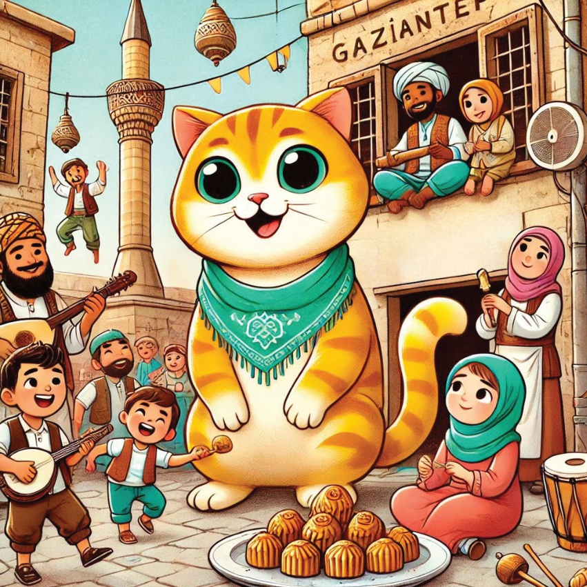
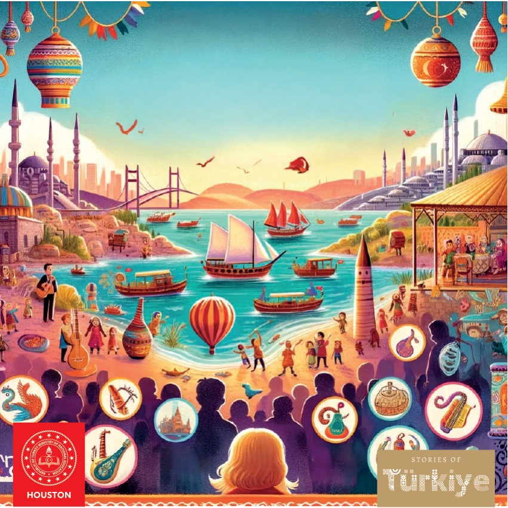

1

2

3
Tidigare fanns det en nyfiken liten katt som hette Karamel, och hon älskade musik. Karamel gav sig ut på en resa över Türkiye för att upptäcka de speciella musikinstrumenten i varje region..
Karamel reste från stad till stad, från bergen till kusten. Hon träffade många vänliga människor som gärna visade henne sina instrument. I de höga bergen hörde hon ett vackert ljud från en *saz*, en sorts luta. På den soliga kusten hörde hon rytmiska ljud från en *davul*, en trumma..
Karamel blev väldigt glad över alla de olika ljuden. Hon lärde sig hur man spelade lite på varje instrument, men hon insåg att det viktigaste inte var själva instrumentet, utan musiken och glädjen den gav..
Till slut återvände Karamel hem, fylld av minnen och nya musikstycken. Hon delade med sig av sina upptäckter till alla sina vänner och fortsatte att älska musik lika mycket som alltid.
4
5
Marmara Region - Istanbul: Ney och Osmanska Kulturen.
Karamel första stopp var Istanbul. Där träffade hon en gammal man som spelade ney. Det mjuka, lugnande ljudet från neyn fyllde luften. Hon såg också det ståtliga Topkapı Palatset och lärde sig om den rika Osmanska kulturen.
6
7
Aegean Region - Izmir: Zurna och traditionell Ege-dans.
Nästa gång åkte Karamel till Izmir i Egeiska regionen. Där hörde hon det livliga ljudet av zurnan och såg människor dansa den traditionella Ege-dansen. Zurnans glada toner fick alla att dansa glatt.
8
9
Medelhavsområdet - Antalya: Ud och Kustkultur Karamel fortsatte sin resa till Antalya, där hon träffade en kvinna som spelade ud vid havet. De vackra melodierna från ud speglade lugnet på Medelhavskusten. Hon njöt också av goda skaldjur.
10

11
Ankara, İç Anadolu Bölgesi: Bağlama ve Anadolu Halk Hikayeleri.
İç Anadolu Bölgesi'nde Karamel Ankara'yı ziyaret etti. Orada genç bir grup insanın bağlama çaldığını ve geleneksel Anadolu halk şarkıları söylediğini gördü. Bağlamanın duygusal sesi, Anadolu ovalarının hikayelerini anlatıyordu.
12

13
Karamelem och Kemençe-gruppen åkte till Trabzon i Svartahavsregionen. Hon hörde den snabba musiken från kemençen och såg människor dansa horon – en väldigt livlig dans! Kemençens glada toner passade perfekt med vågornas rytm.
14

15
Doğu Anadolu - Erzurum: Tulum och Bergs traditioner.
I Doğu Anadolu besökte Karamel Erzurum och träffade en herde som spelade tulum. Tulumens kraftfulla ljud ekade över bergen. Hon lärde sig också om regionens rika traditioner och smakade på lokala godsaker.
16

17
Gaziantep i Southeastern Anatolia: Davul och Zurna, och Kulinariska Läckerheter.
Karamel var på sin sista resa till Gaziantep i Southeastern Anatolia. Där deltog hon i en festlig firande med rytmiska trummor (davul) och ett slags flöjt (zurna). Hon njöt också av god baklava och andra lokala godsaker.
18

19
Med ett hjärta fyllt av musik och mage full av goda godsaker insåg Karamel att Turkiets riktiga skatter var dess rika kultur och de underbara människor hon träffade på vägen. Hon återvände hem, drömmande om sitt nästa äventyr.
20
21

22